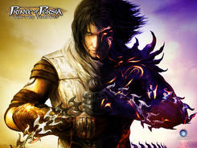

Forums galactiques > Taverne galactique : lieu de discussion informel > Renaissance des ultremes
| Empire Kilrathi Réputation à la taverne : 242  11/03 ETU 08:04 | Score : 0 Détails Alors là, mon pauvre...
Comparer le culte Bodet avec l'Ultremisme... Je crainds que vous n'ayez pas tout compris de la philosophie ultrème... Enfin, on est pas là pour lancer une polémique sur "je recherche les personnes ayant compris cette philosophie"... Sinon, on risque d'y passer l'année sans trouver grand monde... Pour Belegur : Et Arioch Nemesis, même pas un peu ? Un tout petit peu ? Non ? Ah bon... mdr ^^ | ||
| senestre Réputation à la taverne : 0 11/03 ETU 16:47 | Score : 0 Détails [HRP]C'est bizarre mais le petit dessin (globe il me semble) qu'il y a dans les avatar des commandant de la Nouvelle Espagne me fait penser au petit dessin qu'il y a sur les avatrs de certains commandants Ultrèmes de la G0 [/HRP]
| ||
| Dark warrior Réputation à la taverne : 0  11/03 ETU 18:02 | Score : 0 Détails ......
|
Forums galactiques > Taverne galactique : lieu de discussion informel > Renaissance des ultremes